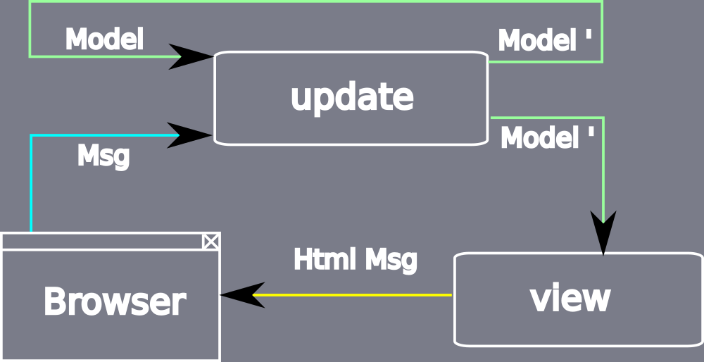
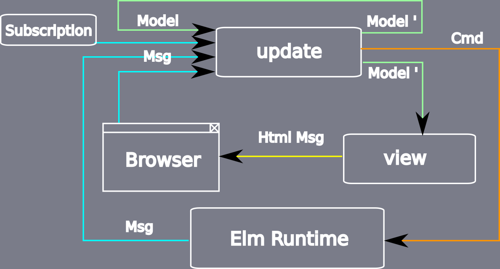
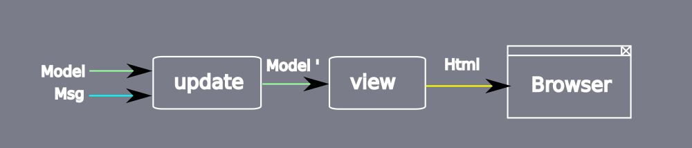

Zero Defect Front Ends
Who's Talking?

Bastian Krol
Developer/Consultant at@bastiankrol
basti1302
bastian.krol@codecentric.de
- Software Development
- Agile Coaching
- Consulting
- Continuous Delivery
- Agile Software Factory
- Software Architecture
- DevOps
- Performance Tuning
- Big Data
- Operations
We're hiring!
- Karlsruhe
- Stuttgart
- Frankfurt
- München
- Berlin
- Hamburg
- Solingen
- Düsseldorf
- Münster
- Dortmund
Elm is...
- Purely Functional
- Static Type System
- Compiles to JavaScript
- Open Source
- Targeted at Web Development
Why Bother?
Marketing Blurbs
- No Runtime Exceptions
- Friendly Compiler Error Messages
- Libraries With SemVer Guarantees
- Clean Syntax
Reduce Bug Hunting
Bug by Nestor Ferraro / CC BY 2.0
Everything is Stateless
Everything is Immutable
The Compiler catches all the bugz
Ancient Elm Proverb
Once it compiles, it just works!
Semver Guarantees
- Change public API of library
- Try to publish as minor/bugfix
- =>Nope
- Powered by Static Typing
Let's See Some Code
Hello World
Elm
import Html
main = Html.text "Hello Cologne!"
Result

Functions
Elm
import Html
greet str = Html.text str
main =
greet "Hello Cologne!"
Result
Type Annotations
Elm
import Html exposing (Html)
greet : String -> Html a
greet str =
Html.text str
main : Html a
main =
greet "Hello Cologne!"
Result
User Interaction
in Elm
User Interaction (1/4)
A very simple Elm app
User Interaction (2/4)
Model
type alias Model = Int
model : Model
model = 0
type Msg = Increment | Decrement
User Interaction (3/4)
View
view : Model -> Html Msg
view model =
div []
[ div [] [ text (toString model) ]
, button [ onClick Decrement ] [ text "-" ]
, button [ onClick Increment ] [ text "+" ]
]
User Interaction (4/4)
Update
update : Msg -> Model -> Model
update msg model =
case msg of
Increment -> model + 1
Decrement -> model - 1
This is the Elm Architecture
- Model (just a type)
view: Model -> Html Msgupdate: Msg -> Model -> Model
That's all there is.
(nearly)
Elm Architecture Overview
But What About Side Effects?
- AJAX
- WebSockets
- Randomness
- ...
The Complete Elm Architecture.
- Commands (
Cmd) - Subscriptions (
Sub) - Model
view: Model -> Html Msgupdate: Msg -> Model -> (Model, Cmd Msg)subscriptions: Model -> Sub Msg
Elm Architecture Overview (Extended)
Unidirectional Data Flow
The Elm Compiler is Your Friend
Typos
myFunction str =
String.repeat 3 str
main =
Html.text (myFunctino "Elm")
-- NAMING ERROR ----------------------- errors/Spelling.elm
Cannot find variable `myFunctino`
9│ Html.text (myFunctino "Elm")
^^^^^^^^^^
Maybe you want one of the following?
myFunction
Type Mismatch
subMismatch =
{ name = "Alice", age = 24 } == { name = "Bob", age = "30" }
-- TYPE MISMATCH --------------------- errors/SubMismatch.elm
The right argument of (==) is causing a type mismatch.
2│ { name = "Alice", age = 24 } == { name = "Bob", age = "30" }
^^^^^^^^^^^^^^^^^^^^^^^^^^^^
(==) is expecting the right argument to be a:
{ ..., age : number }
But the right argument is:
{ ..., age : String }
Forgot a Case?
type Colour = Red | Green | Blue
colourToHex : Colour -> String
colourToHex colour =
case colour of
Red -> "#f00"
Green -> "#0f0"
Forgot a Case?
-- MISSING PATTERNS --------------- errors/ForgottenCase.elm
This `case` does not have branches for all possibilities.
5│> case colour of
6│> Red -> "#f00"
7│> Green -> "#0f0"
You need to account for the following values:
Blue
Add a branch to cover this pattern!
Runtime Exceptions?
JavaScript
function repeatFirst(list) {
var repeated = list[0].repeat(3);
alert(repeated);
}
var list1 =
[ 'hip', 'hop', 'hooray!' ];
...
repeatFirst(list1);
var list2 = [];
...
repeatFirst(list2);
Compile Time > Runtime
repeatFirst list =
let elem = List.head list
in String.repeat 3 elem
> elm-make RepeatFirst.elm --output repeat-first.html
-- TYPE MISMATCH -------------------------- RepeatFirst.elm
The 2nd argument to function repeat is causing a mismatch.
8│ String.repeat 3 elem
^^^^
Function `repeat` is expecting the 2nd argument to be:
String
But it is:
Maybe String
Hint: I always figure out the type of arguments from left
to right. If an argument is acceptable when I check it, I
assume it is "correct" in subsequent checks. So the problem
may actually be in how previous arguments interact with the
2nd.
Corrected Version
repeatFirst list =
let
maybeElem = List.head list
elem = Maybe.withDefault "" maybeElem
in
String.repeat 3 elem
> elm-make RepeatFirst.elm --output repeat-first.html
Success! Compiled 1 modules.
Successfully generated repeat-first.html
Protection From Runtime Exceptions

Programming With a Safety Net
Afraid of refactoring?
I'd love to refactor this, but it's too big.
Afraid of refactoring?
Let's not change it, who knows what side effects it would have.
Afraid of refactoring?
I so wish we had tests for this!
Refactor without fear
- Messed up your initial design?
- Want to turn everything upside down?
- Go ahead, it won't break.
Refactor without fear
10 Change lots of stuff20 Fix compiler error30 While more compiler errors, goto 2040 Working Software! \o/
Without run time errors
and with strong guarantees,
everybody becomes a
and with strong guarantees,
everybody becomes a
Fearless Refactorer
Why is this exceptional?
- Elm makes very strong guarantees
- Other languages with similar properties?
- Why content ourselves with less?
Summary
Elm – Summary
- No runtime exceptions
- Refactoring is easy and safe
- Strong guarantees for free
- We need more languages like this!
Links
Questions?
Thank You!
@bastiankrol
basti1302
bastian.krol@codecentric.de